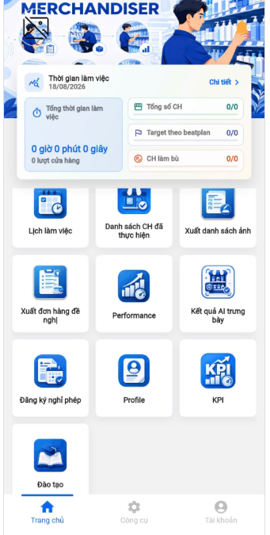
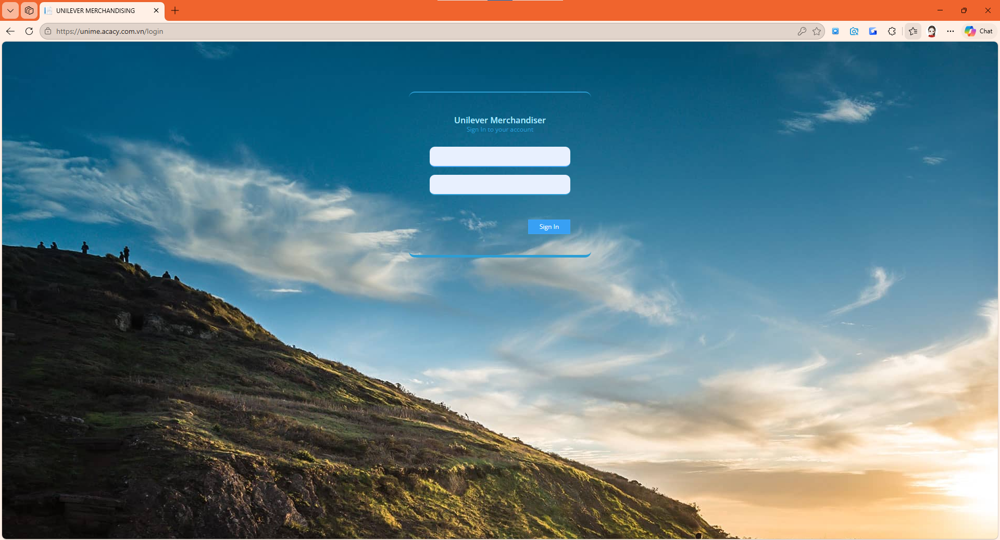
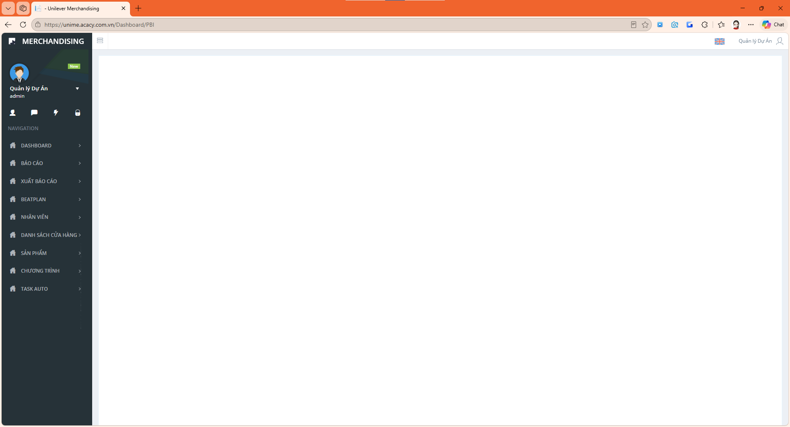
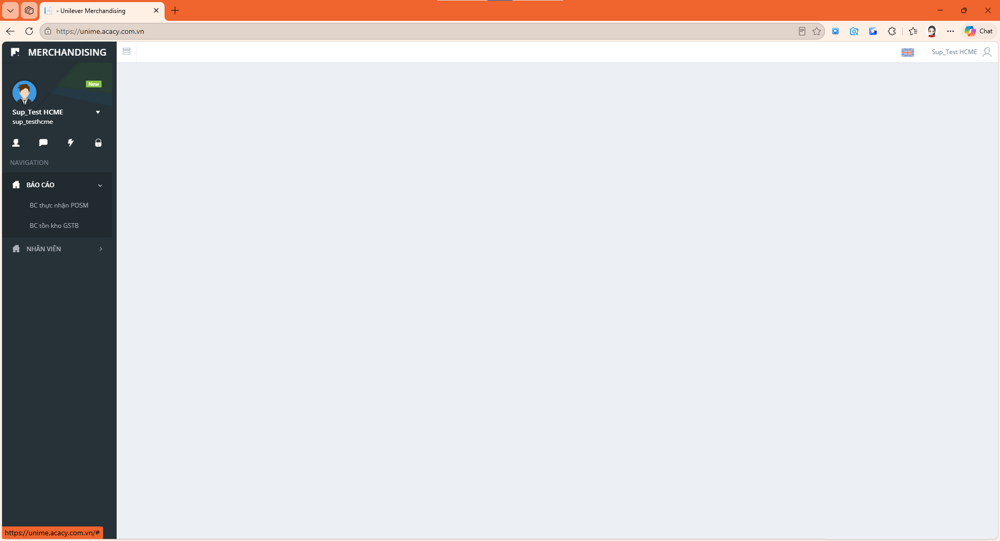
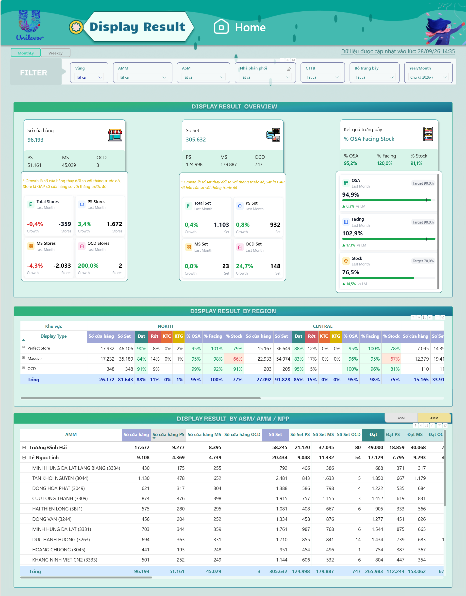
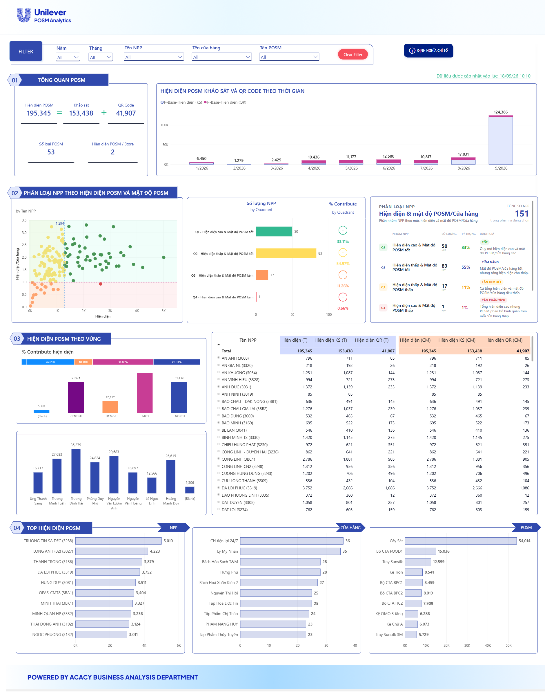

APP Unime
Merchandiser thực hiện tại cửa hàng
19 tính năngVận hành 14Triển khai 5Phát triển 5Maintain 14
Thành quả của quá trình đồng hành và phát triển cùng Unilever: từ ứng dụng cho Merchandiser tại cửa hàng đến dashboard điều hành, đang chạy thực tế và tiếp tục mở rộng.
Merchandiser thực hiện tại cửa hàng
Quản trị, kiểm soát và QC
Chỉ số điều hành theo thời gian thực
Xem thị trường trên mobile
Hệ thống cho khối FW và FC
Chọn hệ thống và bấm mũi tên để xem các màn hình.



APP Unime: ứng dụng hằng ngày của Merchandiser



Web Unime: quản trị, kiểm soát và QC


Dashboard: điều hành trên desktop


AcacyOne: xem thị trường trên mobile


System FWFC: hệ thống cho khối FW và FC
App giao diện mới
Mở rộng có thể dùng hệ điều hành iOS và Android
Danh sách cửa hàng
Beatplan
Cửa hàng gần tôi
Lưu thông tin cửa hàng Mer đã viếng thăm trong ngày, khảo sát chương trình trưng bày gì
Thông tin cửa hàng, chủ cửa hàng, chụp ảnh overview mỗi lần viếng thăm, đảm bảo không cheating vị trí, có target thời gian làm việc tối thiểu ở cửa hàng
Kết quả A.I detect trưng bày không đạt
% hoàn thành KPI
Lương tạm tính
Tối ưu và mở rộng thêm tính năng
[NEW] Visibility (reflect V on Unime app, phục vụ thi đua Mer Contest)
Update QRCode cửa hàng
Thông tin cửa hàng
Chấm công
Tác vụ
Promotion (chương trình trưng bày)
SOS
POSM Khảo sát
POSM QRCode
Công thức tạm tính đạt rớt Promotion
A.I detect hình ảnh, tự fill số vào báo cáo của nhân viên, nhân viên check lại và edit lại nếu có sai số
Tổng thời gian làm việc trong ngày, số cửa hàng đã viếng thăm/beatplan, số cửa hàng bù
Lịch sử thời gian làm việc tại các cửa hàng (CI, CO, total time)
Nhân viên tự tạo mới cửa hàng viếng thăm
Nhân viên tự đăng ký thêm promotion cho cửa hàng
Xuất danh sách hình ảnh đã chụp: overview cửa hàng, KPIs, chương trình trưng bày,...
Xuất danh sách các sản phẩm hết hàng → lên đơn hàng đề nghị
Thống kê performance nhân viên
Mer đăng ký → SUP duyệt
SUP đăng ký → AMM duyệt
AMM đăng ký → cấp quản lý duyệt
Thông tin user, quản lý, ngày bắt đầu tại ACACY, NPP, Vùng, các thành tựu
Chụp hình khuôn mặt chính diện, trái, phải để cập nhật vào hồ sơ nhân viên
Khóa học
Thông báo chương trình,...
Gửi thông tin về IT hỗ trợ
Chấm công, báo cáo trưng bày, POSM, SOS,...
Nhân viên, cửa hàng, nhà phân phối, sản phẩm
Thông tin promotion, sản phẩm, target trưng bày
Target KPI cho từng cửa hàng
Quản lý tồn kho, lắp đặt ở các cửa hàng
Đăng ký beatplan cho từng nhân viên Mer
QC báo cáo trưng bày nhân viên gửi về
Auto mail báo cáo cho các ASM, NPP, AMM,...
View thông tin cửa hàng, kết quả trưng bày, tiền thưởng,...
Visibility là Xanh / Vàng / Đỏ
Xem được bằng Zalo, camera linh động và bảo mật (cần có tài khoản đăng nhập mới xem được data)
POSM tại NPP, cửa hàng. Nhập - tồn - lắp đặt - thu hồi
Tổng hợp key metrics nhằm giúp Management Levels nắm nhanh tình hình thị trường
Thông tin nhân sự theo khu vực, thâm niên, độ tuổi, giới tính, tỷ lệ nghỉ việc
Góc nhìn về số lượng nhân viên thị trường đang làm việc, đồng thời cung cấp các số liệu liên quan đến tuân thủ
Kết quả trưng bày (Đạt, Rớt, KTB, KTC). Đồng thời cung cấp % thực đạt của OSA - Facing - Stock
Kết quả QC (Remind, Pass, Reject, Cheating) theo thời gian, khu vực, CTTB, bộ trưng bày,...
Performance của nhân viên như OSA, QC, Timespend và Successful Call,...
Trang khởi đầu để người dùng truy cập Dashboard hoặc xem Kế hoạch triển khai
Cung cấp góc nhìn tổng thể về tình hình vận hành, Thị trường và Đội ngũ
Theo dõi hiệu quả hoạt động ngoài thị trường theo các nhóm chỉ số chính
Phân tích sâu dữ liệu thị trường theo KPI và cấp quản lý
Theo dõi mức độ thực hiện kế hoạch phủ Cửa hàng và Nhân viên
Theo dõi mức độ tuân thủ hoạt động và quy trình làm việc ngoài thị trường
Theo dõi tình hình thực hiện và chất lượng trưng bày tại điểm bán
Tổng hợp hiệu suất KPI và mức độ rủi ro của đội ngũ theo từng cấp quản lý
Phân tích sâu hiệu suất nhân viên theo KPI, quản lý và các nhóm rủi ro
Hiển thị hồ sơ, kết quả KPI và xu hướng hiệu suất của từng nhân viên
Tạo và xuất báo cáo KPI đội ngũ dưới dạng hình ảnh để chia sẻ
Theo dõi các hạng mục chức năng và kế hoạch phát triển của hệ thống
Khu vực quản lý thông tin và thiết lập cá nhân của người dùng
Tính năng mới phát triển trong năm
Tính năng mới phát triển trong năm
Tính năng mới phát triển trong năm
Tính năng mới phát triển trong năm
Tính năng mới phát triển trong năm
ACACY đã cùng Unilever xây nền tảng vững chắc. Đây là những bước chúng tôi đề xuất cho giai đoạn tiếp theo.
Tiếp tục vận hành và bảo trì các hệ thống đã hoàn thành.
AcacyOne trên mobile và Quản lý POSM trên web.
App giao diện mới cho iOS và Android, Dashboard POSM, tạo cửa hàng và đăng ký promotion ngay trên app.
AI nhận diện hình ảnh, tự điền số liệu vào báo cáo, nhân viên chỉ cần kiểm tra lại.
ACACY mong được tiếp tục đồng hành cùng Unilever trong những bước tiếp theo.